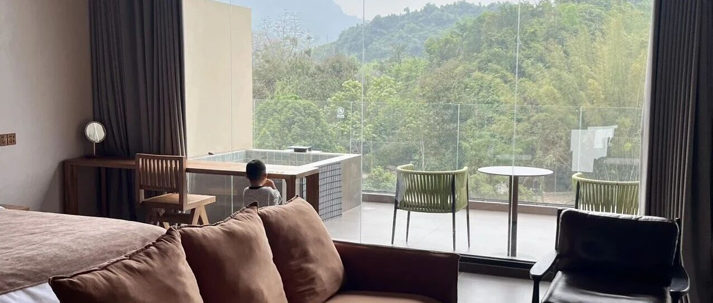

提前退休最快的方法
点击关注 秋秋在分享
一起实现财务自由退休
大家好，我是秋秋呀。
不知道从什么时候起，我们都被套进了一个固定的人生模板：
前半生拼尽全力攒钱，熬完几十年的职场生涯，甚至人生大事都要靠请假完成。
老了走不动路了，身体不太好了，再去谈退休、谈享受。
前几天我写的张雪峰张老师文章也让大家很有感叹。你以为攒够了钱老了退休，再看遍山川湖海，做自己想做的事，可等不等得到那天都不好说……
真到那一天，身体没了年轻时的活力，牙口不好了，心气也被岁月磨平了。
所谓的退休，反而是被迫闲下来。
甚至很多人还不能忍受孤独，和年轻时的期待不一致，也不快乐。
人生根本不该是这样的，其实不用等老了才退休，快乐可以拆进每一天。

我不是喊口号，也不是让你现在就离职，而是教你实现“迷你退休”。
这个方法很简单，deal法则。
首先是D，定位。
咱们要丢掉不切实际的传统退休梦。
传统退休观：让我们等以后，甚至为了以后去厌恶人生中最黄金的年华，天天要盼着老？
工作日盼着周末，周末盼着过年，那自己的人生自己的时间可不是浪费了。
与其去盼着假期，不如定好每间隔一段时间就给自己留一段空白。
大老王辞职一年了，还有很多工作来找他。在有点存款的情况下，歇一歇，对你百年人生影响很小，但是对你的青春很重要。
现在也很流行：请假就应该在身体健康的时候请假！
没事的时侯请假才更有效用。
每个月请一天假，去周边短途旅行，或者逛逛公园、在家放空。
我们是可以把快乐提前，把人生拉长。
然后是E，精简。
我很喜欢极简主义，因为人的注意力有限，太多物品总会让人分心。
砍掉生活里80%无用的事，会让你多出更多时间关注到喜欢的事。
比如我喜欢穿衣打扮，但是我不喜欢做饭，那在吃的事上花费时间就很少。
我们大多数的忙，反而是瞎忙。在目的不清楚的情况下，无意义的社交、刷不完的短视频、随时待命的消息、难缠又无价值的人和事，勇敢舍弃就好。
只有20%的事才决定80%的结果。
从不在意的地方屏蔽，从生活各个方面极简，过滤信息，学会说不，你才能真正过想过的生活。
接下来是A，自控。
这个词可以理解为系统的自动性。
你要记住，好的事业是让系统替你赚钱，不是自己累死累活。
比如你的工作能用AI，你的公司能用职业经理人正常运转，你买入优质股票钱生钱。
只有不用事事亲力亲为，能外包的就外包，你才能收获真正的人生。
所以，从现在开始，就试着做一个简单易运转、能放手的小事业。
把自己从执行者变成设计者，让钱流动起来，才能从柴米油盐和职场琐事里脱身。

最后是L，解放。
你拥有选择权，才能获得真的自由。
自由不是腰缠万贯，而是可以选择什么时候工作、在哪里生活、以什么方式的生活。
我一直强调金钱是分母，决定你什么时候退休是你自己的欲望，这才是分子。
真正的自由就是拥有的大于欲望。
你是上班族可以试着争取高效率一点，用AI换时间自由。你是创业者学会抽离，少一点你的事事盯梢，事情反而能运转得更好。
当然，有点小钱了，你可以去生活成本更低的地方旅居，一边看世界，一边轻松赚钱，钱的价值会被无限放大。
不用急着一步到位，从今天开始，给自己一小时的假期，删掉那些无关紧要的事，每一天都舒心自由。
我们不必困在“必须赚多少钱才能生活”的执念里。
仔细想想，我们要是金钱背后的自由、随心选择的权利，这些根本不用等到晚年。
总之，别等老了再退休，我们现在就把快乐拆进生活里：
1.砍掉琐事，只做最关键的事；
2.搭建省心的赚钱系统，让时间属于自己；
3.不再关注金钱数字，而是拥有时间和空间的自由。
希望我们都能财务自由、提前退休啦。
我现在在崇左：

美景分享给大家～